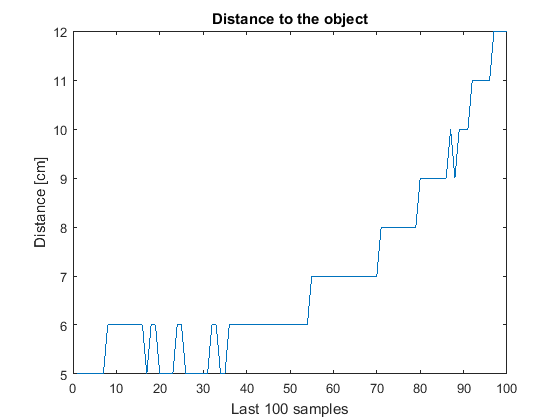

This example shows how to create an ultrasonic add-on library that continuously streams distance to an object from a HC-SR04 sensor using MATLAB® and C++. In this example, you use the ultrasonic HC-SR04 sensor to continuously stream the distance values measured in the last 1 second.
Create a folder to contain all the files for your custom library, and add it to the MATLAB path. For this example:
Add a folder named +arduinoioaddons in
your working folder, for example C:\Work.
In +arduinoioaddons, add a +JRodrigoTech subfolder
to contain your MATLAB class
file.
In the +JRodrigoTech subfolder,
add a src folder to contain your C++ header
file.
Create a C++ header file named UltrasonicDistanceStreamer.h,
and save it in the +arduinoioaddons/+JRodrigoTech/src folder.
This file wraps methods to expose to the Arduino® library.
Include header files, including LibraryBase.h and
the third-party header file Ultrasonic.h that the
add-on library depends on. Download the third-party Ultrasonic library,
unzip it and move it to the libraries folder inside
your Arduino sketchbook folder.
#include "LibraryBase.h" #include "Ultrasonic.h"
Declare global variables that the C++ header file LibraryBase.h uses.
unsigned long lastSampleTime; uint16_t circularArray[100]; int deltaT; int circularArrayIx;
int TrigPin = 9; int EchoPin = 8; Ultrasonic mySensor(TrigPin,EchoPin);
Create an add-on class that inherits from the LibraryBase class,
which defines all the necessary interfaces.
In the constructor, define the library name, and register the library to the server.
class UltrasonicDistanceStreamer : public LibraryBase
{
public:
UltrasonicDistanceStreamer(MWArduinoClass& a)
{
libName = "JRodrigoTech/UltrasonicDistanceStreamer";
a.registerLibrary(this);
}
The custom class and library names must have this format:
shield(vendor)/device(library)
Override the setup method to initialize
the time, array, and index variables.
void setup()
{
// The distance values update every 10 ms and the sampling rate is 100 Samples/s
deltaT = 10;
circularArrayIx = 0;
lastSampleTime = 0;
// Zero initialize the circular Array
circularArray[100] = {0};
}Override the loop method to repeatedly
update the circularArray with most recent distance
values in definite time intervals deltaT.
void loop()
{
long now = millis();
// The circular array updates every 10 ms
if(now-lastSampleTime > deltaT)
{
circularArray[circularArrayIx] = mySensor.Ranging(1);
if (circularArrayIx > 99)
{
circularArrayIx = 0;
}
else
++circularArrayIx;
lastSampleTime = millis();
}
}Override the command handler to create a command that
returns the distance values measured in the last 1 second from the circularArray.
public:
void commandHandler(byte cmdID, byte* dataIn, unsigned int payloadSize)
{
switch(cmdID)
{
case 0x01:
{
byte result [200];
int byteIx = 0;
// Convert the array into byte array and send the values to MATLAB
for (int ix = 0; ix < 100; ++ix)
{
result[byteIx] = (circularArray[ix] & 0x000000ff);
result[byteIx+1] = (circularArray[ix] & 0x0000ff00) >> 8;
byteIx = byteIx + 2;
}
sendResponseMsg(cmdID,result,200);
break;
}
default:
{
// Do nothing
}
}
}
};The command ID must match the operation that you add to the MATLAB add-on library. For more information, see Command Handler.
Create an UltrasonicDistanceStreamer.m wrapper
class file, and save it in the C:\Work\+arduinoioaddons\+JRodrigoTech folder.
Create a MATLAB class UltrasonicDistanceStreamer.m that
inherits from arduinoio.LibraryBase.
classdef UltrasonicDistanceStreamer < arduinoio.LibraryBase ... end
Define the command ID for read operation command that is sent to the server on the board.
classdef UltrasonicDistanceStreamer < arduinoio.LibraryBase ... properties(Access = private,Constant = true) READ_COMMAND = hex2dec('01'); end ... end
Override constant properties in the class to specify the location of source header files.
classdef UltrasonicDistanceStreamer < arduinoio.LibraryBase ... properties(Access = protected,Constant = true) LibraryName = 'JRodrigoTech/UltrasonicDistanceStreamer'; DependentLibraries = {}; ArduinoLibraryHeaderFiles = {'Ultrasonic/Ultrasonic.h'}; CppHeaderFile = fullfile(arduinoio.FilePath(mfilename('fullpath')),'src','UltrasonicDistanceStreamer.h'); CppClassName = 'UltrasonicDistanceStreamer'; end ... end
Set the ResourceOwner property
for the class.
classdef UltrasonicDistanceStreamer < arduinoio.LibraryBase ... properties(Access = private) ResourceOwner = 'UltrasonicDistanceStreamer'; end ... end
Define the class constructor, set the methods to call
the class constructor, and set the Parent and Pins properties
of the UltrasonicDistanceStreamer object. Also,
use the configurePinResource function to set the
resource owner and mode for both the trigger pin D9 and echo pin D8.
classdef UltrasonicDistanceStreamer < arduinoio.LibraryBase ... methods function obj = UltrasonicDistanceStreamer(parentObj) obj.Parent = parentObj; obj.Pins = {'D9','D8'}; configurePinResource(obj.Parent,char(obj.Pins(1)),obj.ResourceOwner,'DigitalOutput'); configurePinResource(obj.Parent,char(obj.Pins(2)),obj.ResourceOwner,'DigitalInput'); end ... end end
Define the method to read the data values, and plot the values measured in the last 1 second.
classdef UltrasonicDistanceStreamer < arduinoio.LibraryBase ... methods ... function plotStream(obj) cmdID = obj.READ_COMMAND; inputs = []; distancebyteArray = sendCommand(obj,obj.LibraryName,cmdID,inputs); for i = 1: 100 byteIx = i*2; distance(i) = typecast(uint8(distancebyteArray((byteIx-1):byteIx)),'int16'); end figure; plot(distance); title('Distance to the object'); xlabel('Last 100 samples'); ylabel('Distance [cm]'); end end
For help using MATLAB, see Object-Oriented Design with MATLAB (MATLAB).
To register your add-on library, add the working folder that
contains +arduinoioaddons to the MATLAB path:
addpath C:\WorkRun the command listArduinoLibraries, and
make sure the JRodrigoTech/UltrasonicDistanceStreamer library
is available.
listArduinoLibraries
listArduinoLibraries
ans =
'Adafruit/MotorShieldV2'
'I2C'
'JRodrigoTech/UltrasonicDistanceStreamer'
'SPI'
'Servo' Tip: If you do not see your add-on library in the list, see Custom Arduino Library Issues. |
Read the distance values measured in the last
1 second from the Arduino library commandHandler into MATLAB.
Create an arduino object, and include
the new library. Set ForceBuild to true to
reprogram the board.
arduinoObj = arduino('COM3','Uno','Libraries','JRodrigoTech/UltrasonicDistanceStreamer','ForceBuild',true);Create an add-on object using the JRodrigoTech/UltrasonicDistanceStreamer library.
dev = addon(arduinoObj,'JRodrigoTech/UltrasonicDistanceStreamer')dev =
UltrasonicDistanceStreamer with properties:
Pins: {'D9' 'D8'}Execute the command on the server, and plot the measured distance values in the last 1 second in MATLAB.
plotStream(dev);

This plot shows that the distance to the object from the sensor has been continuously changing, which indicates that either the object or the sensor is in motion.